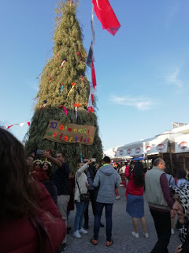
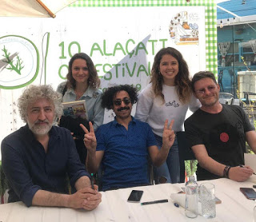
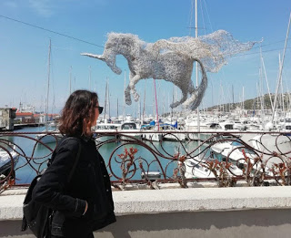

Uzun bir aradan sonra hepinize merhabalar. Bu yayında boş zaman aktivitelerimden bahsetmek istiyorum :) Yapmayı en çok sevdiğim şey yeni yerler gezip görmek.. Bu yazımda Çeşme'de gezip gördüğüm yerleri anlatmak istiyorum.
Çeşme özellikle yaz aylarında İzmir içindeki en sevdiğim yerlerden bir tanesi.

Yıl içerisinde birçok festival ve etkinliğe ev sahipliği yapıyor. Bu sene Alaçatı'daki Ot Festivali'ne katılma şansım oldu. Aslında ani gelişen bir karardı, bitmek bilmeyen bir ders çıkışı İlayda ile kendimizi Alaçatı'da bulduk diyebilirim. Etkinliğe bakacak olursak genel konsept yöresel yemekler üzerineydi. Bir Bursalı olarak değişik lezzetler denediğimi söyleyebilirim Şevketi Bostan gibi :)

Aynı zamanda Ot Dergisinden Selçuk Erdem'in, Dündar Hızal'ın ve Tuna Kiremitçi'nin katıldığı bir söyleşiye rastladım. Bu işlere ilgili olanların nereden başlamalıyım gibi sorularının cevapları tartışıldı. Çoğu konuda olduğu gibi önemli olan şey ne istediğini bilmekti onlar için de. Hemen sağ tarafa da güzel bir kare bırakayım :)
Kısacası Ot Festivali Nisan aylarında gerçekleşen imkanınız varsa katılmanızı tavsiye ettiğim bir etkinlik. Sizlere Alaçatı'nın en keyifli olduğu bahar aylarında İzmir'e özgü lezzetleri bulabilme imkanı sağlıyor.
Şimdi de Beste ve Gamze ile Çeşme'ye gittiğim bir başka günde gezme fırsatı bulduğum Çeşme Kalesinden bahsetmek istiyorum. Çeşme Kalesi hem tarihi hem de turistik açıdan gerçekten ilgi çekici bir mimariye sahip. Kale oldukça büyük bir alana yayılmış, gezerken biraz yorulabilirsiniz ama en tepeye çıktığınızda Çeşme'nin her yerini görebileceğiniz o manzaraya kesinlikle değecektir.
Aynı zamanda Kale, içerisinde eski zamanlarda kullanılan takılar, paralar gibi eserlerin de sergilendiği odaları da bulunduruyor. Çeşme'ye yolunuz düşerse kesinlikle gitmenizi tavsiye ettiğim yerlerden bir tanesi.
Artık yaz mevsimi geldiğine göre deniz sezonu da yavaş yavaş açılmaya başladı :) Çeşme'de denize girmek için birçok plaj ve koy var ama maalesef hepsini görebilme imkanım olmadı. Geçenlerde Ilıca'ya gitmiştik. Denizi gerçekten çok temiz ve serin yani bu sıcak havalar için çok ideal durumda. Şu sıralar fazla kalabalık da değil, gitmeyi düşünüyorsanız tam zamanı :)

İzmir Yüksek Teknoloji Enstitüsünde okuduğum için Çeşme'ye olan uzaklığım 20 dakika civarı, o yüzden hafta sonu özellikle havalar da ısınmaya başlayınca kolayca gidip güzel vakit geçirdiğim bir yer olduğunu söyleyebilirim. Ders yoğunluğu insanı gerçekten bunaltıyor. O yüzden farklı yerleri gezmek arkadaşlarla keyifli vakit geçirmek okulu daha katlanılır hale getiriyor. Özellikle öğrenciyseniz kesinlikle bu zamanların tadını çıkartıp gezmeye de vakit ayırın :)